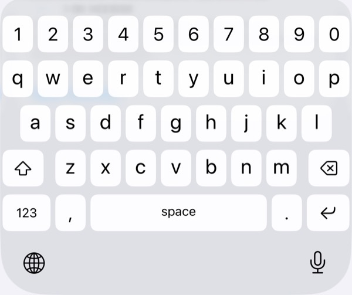
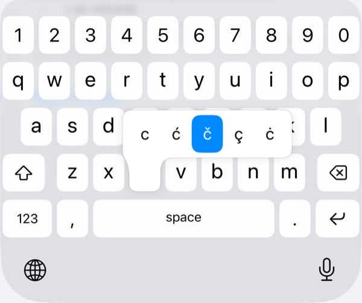
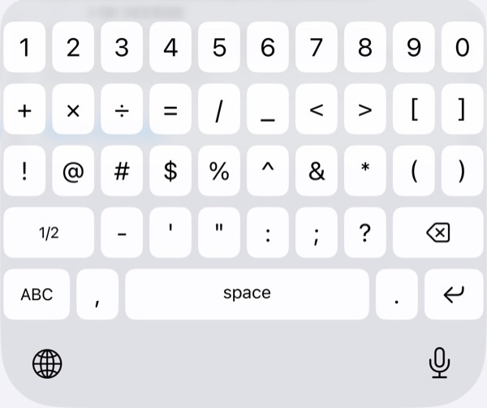

The problem
The stock iPhone layout didn't suit how I type. Numbers, commas and Serbian letters were each a page switch or a keyboard switch away: no digits row, a comma hidden behind 123, symbols not where I expected them, and š, ć, č, đ and ž on a separate keyboard.
So I built the one I wanted.



What it does
- A row of digits above the letters on every page.
- Comma and period on either side of the spacebar.
- Two pages of symbols laid out like Android's, switched with 1/2 and 2/2.
- Long-press S, C, D or Z for š, ć, č, đ and ž, following Shift and Caps Lock, with the standard accents still available after them.
- Long-press the period for ? ! ' and ".
That's all. No autocorrect, no suggestions, no accounts, no network code. It's about 300 lines of Swift.
Learning the platform
Most of the work was learning how iOS keyboard extensions behave. A few things I ran into:
| Linking | KeyboardKit ships as a closed-source binary framework. It is linked into the container app only, and the keyboard extension finds it at runtime in the app's Frameworks folder: one copy, shared by both. |
| The digits row | The library's built-in number toolbar renders blank on iPhone in its free tier, so the digits row is a real layout row, inserted by hand. |
| The return key | Its action carries the text field's return type, which changes from field to field. Resizing it means matching the kind of action, not a specific value. |
| Web address fields | These already have a key that types a period and offers .com on long-press, so the keyboard leaves its own period out there instead of showing two. |
| Haptics | iOS won't let a keyboard vibrate without Full Access, which also unlocks network access. I made it optional, said in plain words what it's for, and kept the keyboard fully usable without it. |
The Xcode project is generated from a short spec with XcodeGen rather than committed, so the build configuration is readable and reviewable, the same way I'd treat infrastructure config anywhere else.
Shipping it
Getting it onto the App Store was its own small project: a container app, because iOS only ships keyboards inside one; screenshots at the required device sizes; a preview video; a privacy policy hosted on GitHub Pages; and review notes explaining exactly what Full Access is used for. I tested it on my own iPhone through TestFlight, and answered App Review's follow-up questions with a screen recording.
The source is public: github.com/milosozegovic/simple-ios-keyboard. The app has its own support page, and its privacy policy is short, because there is nothing to collect.